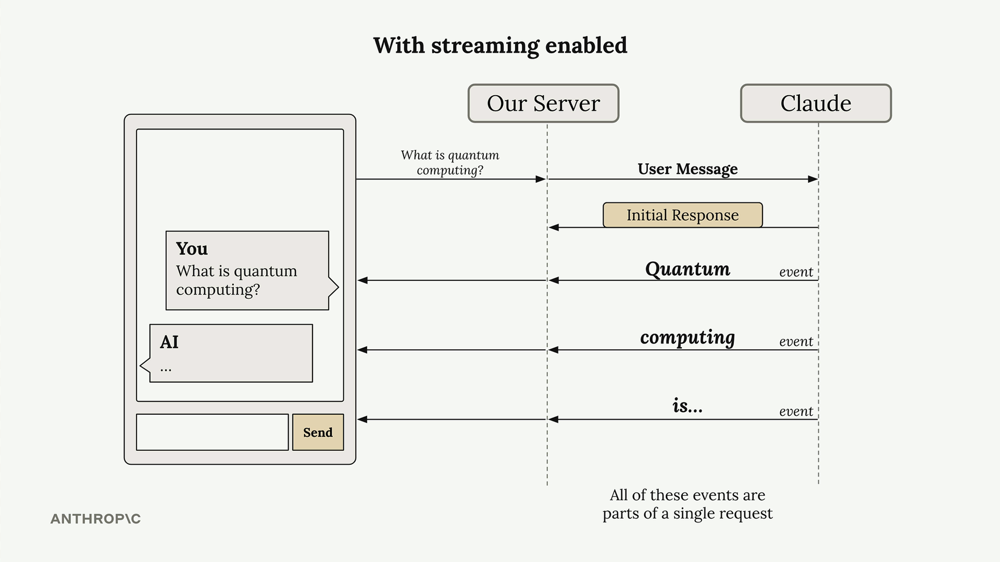
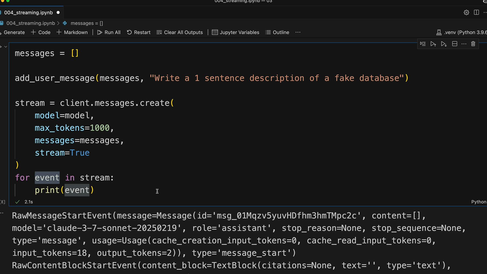

Потоковый ответ
Чему научитесь
Около 8 минут
К концу урока вы сможете:
- объяснить, зачем поток, если ответ занимает 10–30 секунд;
- отличить события потока и где в них текст;
- показать куски пользователю и сохранить целое сообщение.
Долгое молчание
Видео и схемы урока.
Смотреть урок на Skilljar Response streamingВ обычном чате сервер ждёт полный ответ Claude и только потом отдаёт его клиенту. На экране 10–30 секунд крутится индикатор. Поток это убирает: текст появляется по мере генерации.

Как идёт поток
Claude сразу подтверждает, что запрос принят и генерация началась. Дальше приходит серия событий, в каждом кусок текста. Сервер пересылает их клиенту. Это всё ещё один запрос, не несколько.

Какие бывают события
- MessageStart — началось сообщение;
- ContentBlockStart — начался блок: текст, tool use или другое;
- ContentBlockDelta — кусок сгенерированного текста, его и показывают;
- ContentBlockStop — блок закончен;
- MessageDelta — сообщение собрано;
- MessageStop — сведений об этом сообщении больше нет.
Разбор событий вручную
messages = []
add_user_message(messages, "Write a 1 sentence description of a fake database")
stream = client.messages.create(
model=model,
max_tokens=1000,
messages=messages,
stream=True
)
for event in stream:
print(event)
Только текст
SDK умеет отдать уже вынутый текст, без ручного разбора событий.
with client.messages.stream(
model=model,
max_tokens=1000,
messages=messages
) as stream:
for text in stream.text_stream:
print(text, end="")
Целиком для хранения
Куски хороши для экрана. В базу обычно кладут собранное сообщение.

with client.messages.stream(
model=model,
max_tokens=1000,
messages=messages
) as stream:
for text in stream.text_stream:
# Send each chunk to your client
pass
# Get the complete message for database storage
final_message = stream.get_final_message()
Дальше
Дальше ответ нужен без пояснений вокруг: чистый JSON или другой кусок структуры.
Оригинал урока: Response streaming.